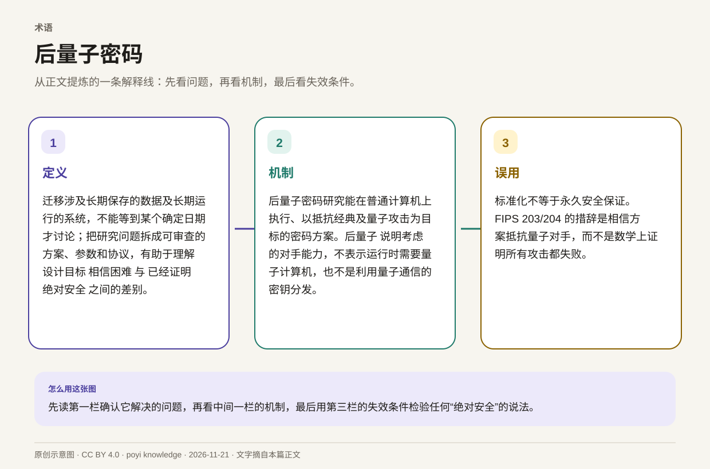

原理与机制
后量子密码研究能在普通计算机上执行、以抵抗经典及量子攻击为目标的密码方案。后量子说明考虑的对手能力，不表示运行时需要量子计算机，也不是利用量子通信的密钥分发。
必须先分任务：密钥封装机制 KEM 建立共享秘密；签名方案生成和验证签名。ML-KEM 的安全性与 Module Learning with Errors 问题有关；SLH-DSA 则属于无状态哈希签名。不同结构不能靠一个量子加密名称混为一谈。

为什么重要
迁移涉及长期保存的数据及长期运行的系统，不能等到某个确定日期才讨论；本条也不预测量子计算机何时能攻击现实密钥。把研究问题拆成可审查的方案、参数和协议，有助于理解设计目标``相信困难与已经证明绝对安全之间的差别。
应用与实例
NIST FIPS 203 指定 ML-KEM，用于在公开信道建立共享秘密，再由适合的对称构件完成后续任务。FIPS 204 的 ML-DSA 和 FIPS 205 的 SLH-DSA 用于签名，不用于同一种密钥封装任务。将来集成还须处理协议身份认证、密钥管理和格式，不能只改一个算法名称。
边界与攻击面
标准化不等于永久安全保证。FIPS 203/204 的措辞是相信方案抵抗量子对手，而不是数学上证明所有攻击都失败。参数、实现和协议仍须分析；本轮查阅的 FIPS 203 与 204 页面也提供勘误/潜在更新说明，维护时应连同正式文本检查。
本概念页不实现自制ML-KEM，也不用小整数格子演示来冒充其安全验证。具体标准的测试向量和参数验证属于后续独立算法条目。
历史与背景
NIST 于 2024 年 8 月 13 日公布 FIPS 203、204、205，分别覆盖 ML-KEM、ML-DSA、SLH-DSA。这里记录明确已发布的三份标准及其职责，不把候选方案、草案和正式标准混写，也不声称它们穷尽全部后量子研究。状态说明以 2026-10-24 本轮查阅页面为准。
参考出处
- NIST CSRC, Post-Quantum Cryptography project
- NIST, What Is Post-Quantum Cryptography?
- NIST, FIPS 203, Module-Lattice-Based Key-Encapsulation Mechanism Standard, August 13, 2024
- NIST, FIPS 204, Module-Lattice-Based Digital Signature Standard, August 13, 2024
- NIST, FIPS 205, Stateless Hash-Based Digital Signature Standard, August 13, 2024
- NSA/CSS, Quantum Key Distribution (QKD) and Quantum Cryptography (QC)